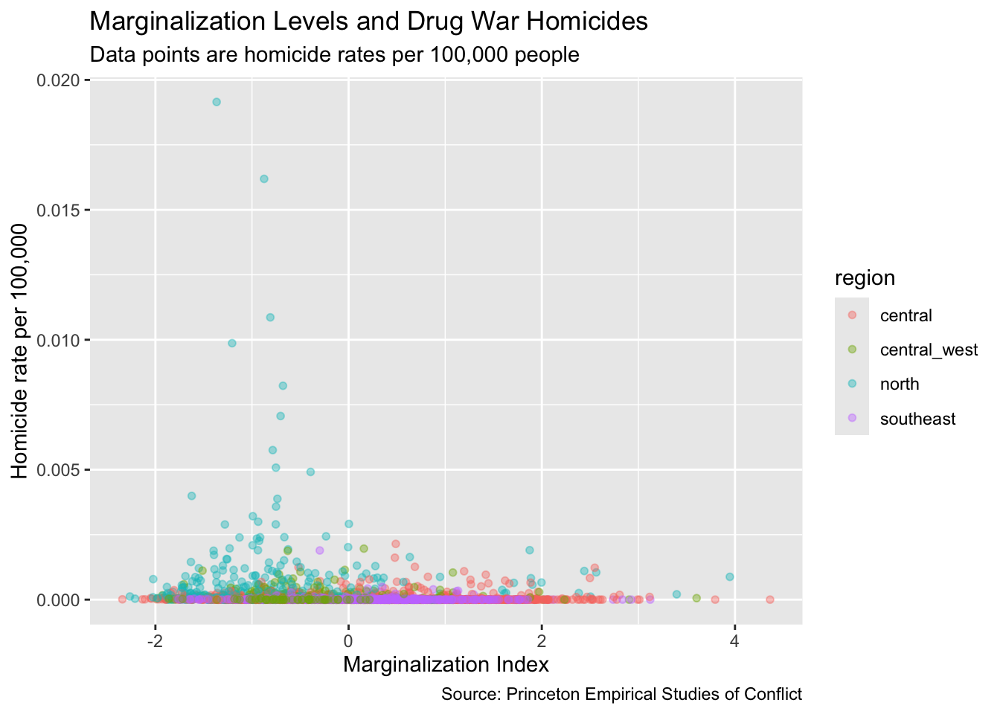
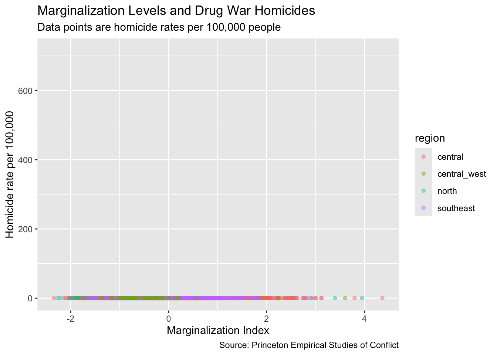
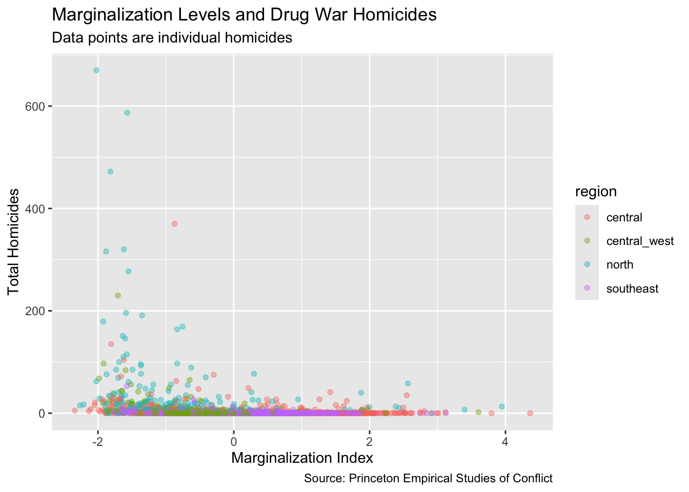
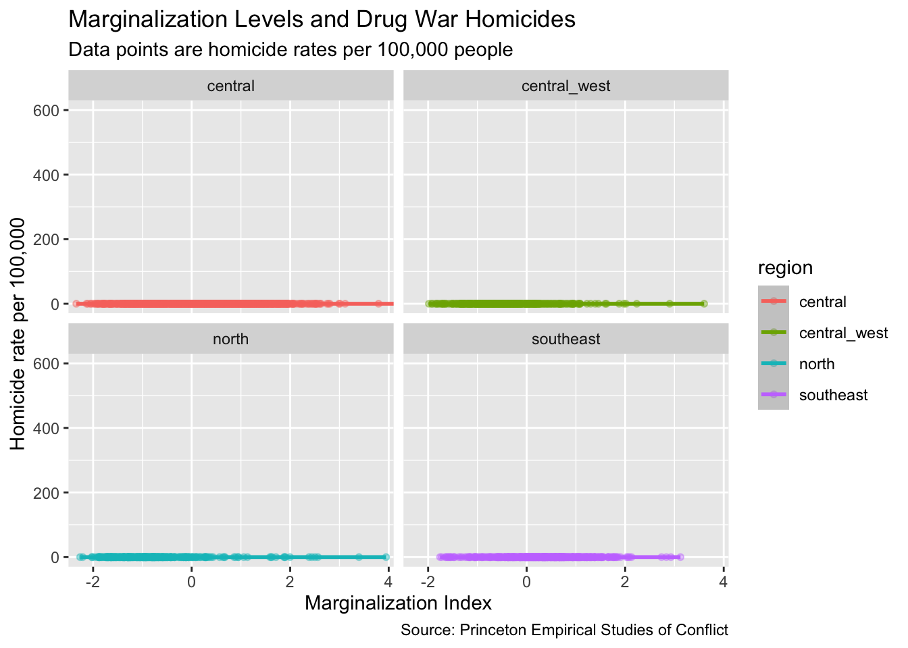
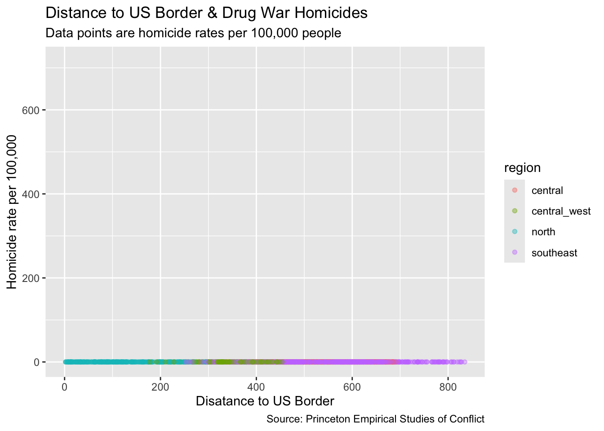
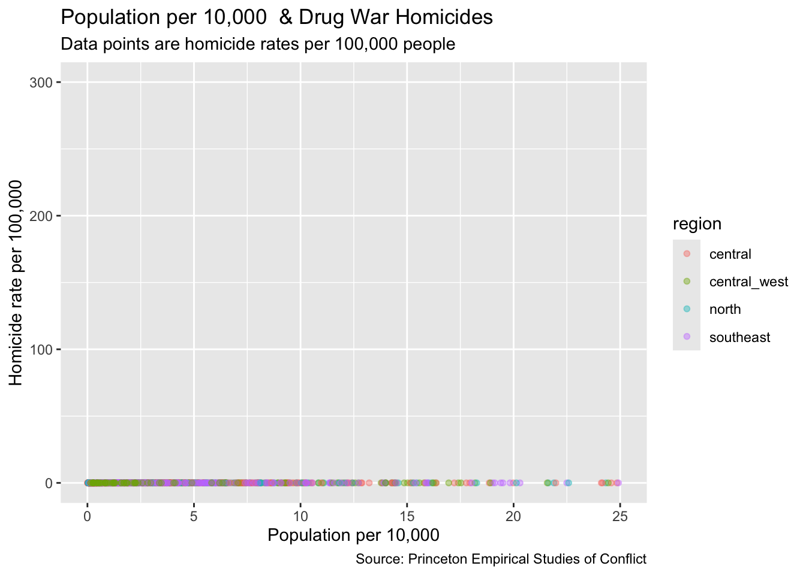
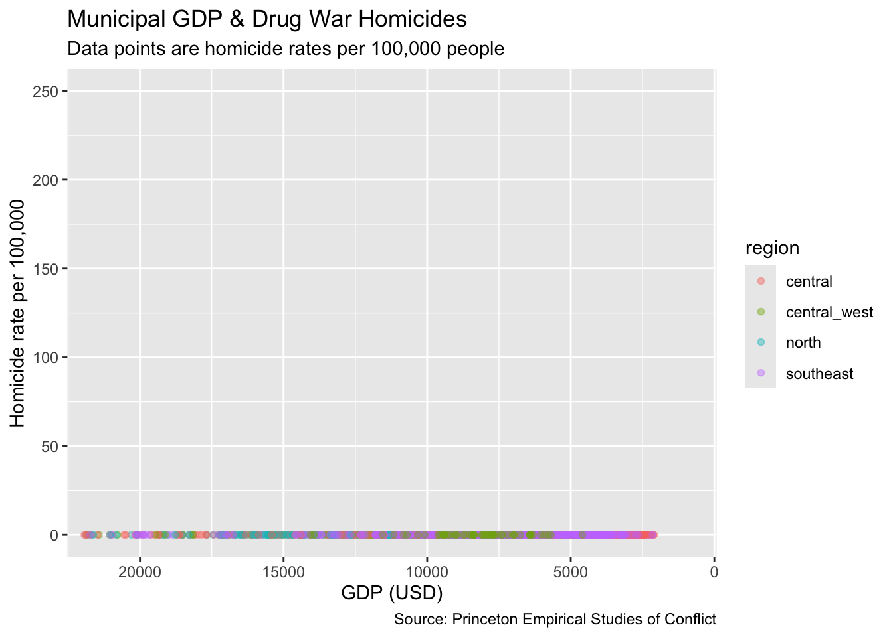

Exploring the relationship between poverty and homicide rates from the Mexican War on Drugs
Author
Diego Flores
Published
November 1, 2023
This project belongs to a political science thesis and a Fulbright Garcia-Robles fellowship while I worked at UNAM, Mexico’s National University. You can read the full paper here.
Click to show code
library(readr)library(sjPlot)library(sjmisc)library(sjlabelled)library(ggplot2)library(janitor)library(tidyverse)library(foreign)library(haven)library(readxl)library(dplyr)library(janitor)library(kableExtra)library(infer)library(broom)library(xtable)# install.packages(DataExplorer) library(DataExplorer)#install.packages("cheatsheet")library(cheatsheet)library(sjPlot)library(sjmisc)library(sjlabelled)library(tidyverse)library(knitr)library(foreign)library(stringr)library(MatchIt)library(naniar)# install.packages("arsenal")library(arsenal)library(stargazer)# install.packages("vtable")library(vtable)#Marginalization data
marginalization2 <-read.csv("data_raw/marg_index_06anexo_base.csv") #marg by municipality 2010, columns str are not characters#Homicide dataesochomicide <-read_dta("data_raw/ESOC_Mexico_drug_related_murders.dta") #all homicide data 2006- 11 homicidesub <- esochomicide %>%filter(year ==2010) #subset ESOC homicide data for 2010 valueshomicidesub2 <- homicidesub[,c("idunico", "deaths_total","deaths_execution", "deaths_confront", "deaths_aggression")] #sum(is.na(homicidesub2))
state muncode municipio year areakm2
0 0 0 0 0
population popn_10k dist_us_border gdp_usd same_all
9 9 0 8 5
same_state_mun same_mun_exec
5 5
Warning: Unknown or uninitialised column: `total_govt_transfer`.
These plots visualize the relationship between marginalization and homicides per 100k alongside additional categorical variables, such as region.
##Plot 1 p1 <-ggplot(data = mhmerge_controls2_nj) +aes(x = margin_index, y = homicide_rates100k, color = region) +geom_point(size =1.4, alpha =0.4) +labs(x ="Marginalization Index", y ="Homicide rate per 100,000",title ="Marginalization Levels and Drug War Homicides", subtitle ="Data points are homicide rates per 100,000 people",caption ="Source: Princeton Empirical Studies of Conflict")p1
Warning: Removed 2 rows containing missing values or values outside the scale range
(`geom_point()`).

p1 +ylim(0, 715) #Zooming into plot
Warning: Removed 2 rows containing missing values or values outside the scale range
(`geom_point()`).

p1.2<-ggplot(data = mhmerge_controls2_nj) +aes(x = margin_index, y = deaths_total, color = region) +geom_point(size =1.4, alpha =0.4) +labs(x ="Marginalization Index", y ="Total Homicides",title ="Marginalization Levels and Drug War Homicides", subtitle ="Data points are individual homicides",caption ="Source: Princeton Empirical Studies of Conflict")p1.2

#Running average - 'loess'# Plot 1 still p1 +ylim(0, 715) +geom_smooth(method ="loess", se =FALSE)
`geom_smooth()` using formula = 'y ~ x'
Warning: Removed 2 rows containing non-finite outside the scale range (`stat_smooth()`).
Removed 2 rows containing missing values or values outside the scale range
(`geom_point()`).
Warning: Removed 15 rows containing missing values or values outside the scale range
(`geom_smooth()`).
Warning: Removed 2 rows containing non-finite outside the scale range
(`stat_smooth()`).
Warning: Removed 2 rows containing missing values or values outside the scale range
(`geom_point()`).

#Homicides as a function of distance to US border p2 <-ggplot(data = mhmerge_controls2_nj) +aes(x = dist_us_border, y = homicide_rates100k, color = region) +geom_point(size =1.4, alpha =0.4) +labs(x ="Disatance to US Border", y ="Homicide rate per 100,000",title ="Distance to US Border & Drug War Homicides", subtitle ="Data points are homicide rates per 100,000 people",caption ="Source: Princeton Empirical Studies of Conflict") +ylim(0, 715) p2
Warning: Removed 2 rows containing missing values or values outside the scale range
(`geom_point()`).

#Homicide plotted against govt transfer#removed#homicide plotted against populationp4 <-ggplot(data = mhmerge_controls2_nj) +aes(x = popn_10k, y = homicide_rates100k, color = region) +geom_point(size =1.4, alpha =0.4) +labs(x ="Population per 10,000", y ="Homicide rate per 100,000",title ="Population per 10,000 & Drug War Homicides", subtitle ="Data points are homicide rates per 100,000 people",caption ="Source: Princeton Empirical Studies of Conflict") +ylim(0, 300) +xlim(0,25)p4
Warning: Removed 91 rows containing missing values or values outside the scale range
(`geom_point()`).

# Homicides and GDP p5 <-ggplot(data = mhmerge_controls2_nj) +aes(x = gdp_usd, y = homicide_rates100k, color = region) +geom_point(size =1.4, alpha =0.4) +labs(x ="GDP (USD)", y ="Homicide rate per 100,000",title ="Municipal GDP & Drug War Homicides", subtitle ="Data points are homicide rates per 100,000 people",caption ="Source: Princeton Empirical Studies of Conflict") +ylim(0, 250) +xlim(22000,0) +coord_cartesian(xlim =c(21500,950))p5
Warning: Removed 33 rows containing missing values or values outside the scale range
(`geom_point()`).

# W/ deaths total & outlier model_outlier <-lm(deaths_total ~ margin_index, data = marg_homicide_df)summary(model_outlier)
Call:
lm(formula = deaths_total ~ margin_index, data = marg_homicide_df)
Residuals:
Min 1Q Median 3Q Max
-20.36 -9.22 -4.38 0.93 2719.79
Coefficients:
Estimate Std. Error t value Pr(>|t|)
(Intercept) 6.213 1.240 5.010 5.84e-07 ***
margin_index -7.483 1.240 -6.033 1.86e-09 ***
---
Signif. codes: 0 '***' 0.001 '**' 0.01 '*' 0.05 '.' 0.1 ' ' 1
Residual standard error: 61.46 on 2454 degrees of freedom
Multiple R-squared: 0.01461, Adjusted R-squared: 0.01421
F-statistic: 36.39 on 1 and 2454 DF, p-value: 1.856e-09
# regression output in html with output saved to file, good for word and hosting an html site, for exmaple through quarto.stargazer(model1, model2, model3, model4, model5, type ="html")